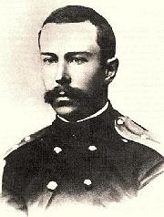

Musica Donavania Playlist
October 20, 2012
Our event this month was devoted to works by Nicolai A. Rimsky-Korsakov.
Retired from the Tzar's navy, Rimsky-Korsakov was a largely self taught
composer and orchestrator. He began his academic studies after
being appointed professor of composition and orchestration at the
St. Petersburg Conservatory (so he could teach from the books).
KUSC's Jim Svejda calls Rimsky-Korsakov "the world's greatest
second-rate composer". Archive Music has 938 available CD listings for
him, yet it's not easy finding works among them not instantly familiar.
Most composers can be that "second-rate" only in their dreams.
Rimsky-Korsakov was composition teacher to Igor Stravinsky, Ottorino
Respighi and many other noted composers of the following generation.

Web Page
|
|
|
| Disk 1 | Antar - Symphony #2
Snow Maiden - Snegourotchka - Suite
Mlada - Suite |
32 min
13 min
18 min |
| Disk 2 | Neopolitan Song
Invisible City of Kitezh - Suite
Le Coq d'Or - Suite
Russian Easter Overture |
3 min
22 min
26 min
15 min |
| Disk 3 | Quintet for Piano and Winds |
30 min |
| Disk 4 | Kashchey the Immortal - Opera |
64 min |
| Disk 5 | Legend
Tzar's Bride - Overture
Sinfonetta on Russian Themes
Capricio Espagnole
Maid of Pskov - Overture |
17 min
6 min
25 min
16 min
7 min |
| Disk 6 | May Night - Overture
Sadko
Tzar Sultan - Suite
Snow Maiden - Snegourotchka - Suite
|
8 min
11 min
21 min
12 min |
|
©Clove Garden
- music@clovegarden.com